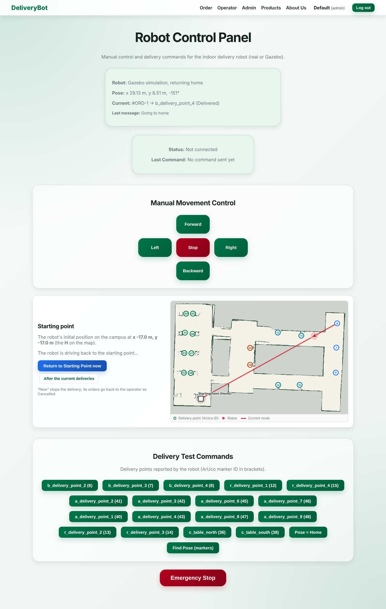

The DeliveryBot backend was first written for the physical robot: it called a small REST API on the Raspberry Pi
(port 5000). To test the whole service – ordering, dispatch, navigation, status – without hardware, the simulation had to
look exactly like that robot from the outside. The ROS 2 node web_bridge does this: it is the delivery
navigator (same map, same ArUco EKF localisation, same Dijkstra/Held-Karp planning, same marker check) wrapped in an
HTTP server that serves the Pi's API. Switching between Gazebo and the real robot is a single setting in
Admin → Robot Settings (Use Gazebo Simulation = 127.0.0.1:5000).
React :5173 → Spring Boot :8080 + MySQL → (HTTP) → web_bridge :5000 → (ROS 2) → Gazebo RB1 robot web_bridge → POST /api/orders/robot-status → Spring Boot → (2 s polling) → every open page
| Part | What it does |
|---|---|
Gazebo Harmonic, world two_buildings | RB1 robot with lidar, IMU, mast camera, diff drive; ArUco markers on walls and tables |
ros_gz_bridge (config/gz_bridge.yaml) | Gazebo → ROS: /clock, lidar scan, IMU, both cameras + camera_info |
twist_to_stamped_bridge | /cmd_vel (Twist) → /robot/diff_drive_controller/cmd_vel (TwistStamped) |
web_bridge (ROS 2 node, Python) | HTTP API, job queue, mission worker thread, status reporter thread, MJPEG camera stream, map rendering |
Spring Boot RobotApiController + RaspberryPiService | Proxies every robot call, 2 s/5 s timeouts, robot URL from the database |
run_web_sim.sh / web_sim.launch.py | Starts Gazebo, web_bridge, backend and frontend with one command (web app delayed 20 s) |
| Method and path | Body / result |
|---|---|
GET /robot/status | state (idle, busy, manual control…), pose, current and queued orders, last messages |
GET /robot/points | delivery points of the loaded map: name, ArUco id, x, y |
GET /robot/map.png, /robot/map-info | the SLAM map as an image + origin/resolution, points, robot pose and route for the campus map |
POST /robot/plan | {"stops": [...]} → shortest order, legs, total, and the arrival-order total |
POST /robot/mission | {"orders": [{"orderID", "orderDbId", "deliveryPoint"}, ...]} → queued as one tour |
POST /robot/delivery | one order; point from route or from targetArucoId (legacy table flow) |
POST /robot/command | FORWARD/BACKWARD/LEFT/RIGHT, STOP, EMERGENCY_STOP, TAKEOVER, RELEASE, RETURN_BASE, RETURN_HOME_NOW, SET_HOME_POSE, RELOCALIZE |
GET /robot/sensors/latest | front/left/right/back lidar distance in cm (minus body radius) |
GET /robot/camera-stream, /camera-snapshot | MJPEG of /robot/aruco_camera/image_raw at 5 fps, JPEG quality 70 |
ThreadingHTTPServer on 0.0.0.0:5000 with CORS headers; requests only put jobs into a queue
or read state, so they answer immediately.run_tour(stops → home) with Held-Karp ordering, and sets each job to
Delivered or Failed as its stop is reached. Orders that arrive while driving form the next batch.{backend_url}/orders/robot-status, so a
stopped backend never blocks the robot (warnings are rate-limited).multipart/x-mixed-replace..sdf) to PNG once and caches
it; the robot pose and route are sent as data so the browser can draw them on top.| Button (Admin → Camera Streaming & Take Control) | Command | Effect |
|---|---|---|
| Take control | TAKEOVER | Aborts the running leg, keeps unfinished orders as Delivering – Paused and puts them back at the front of the queue |
| Arrows / W A S D | FORWARD … RIGHT | 0.3 m/s or 0.6 rad/s for 0.6 s per press, only in manual mode |
| Release robot | RELEASE | Leaves manual mode; the worker replans from the current pose and finishes the paused orders |
| Emergency stop | EMERGENCY_STOP | Stops at once, cancels running and queued orders (Cancelled) – they return to the operator list |
| Return to start | RETURN_HOME_NOW | Gives orders back and drives home |



cd ~/indoor-delivery-robot/ros2_ws ./run_web_sim.sh --build # first time ./run_web_sim.sh # Gazebo + web_bridge (campus_full_map7) + backend + frontend ./run_web_sim.sh gui:=false rtf:=3.0 # headless, 3x real time curl localhost:5000/robot/status # test the robot API without the web app
The world must match the map: campus_full_map7 was built in two_buildings (start −17, −17);
campus6 in campus_area (start −25, 0). The backend and frontend start 20 s after Gazebo because Maven,
Java and Vite starting together can starve Gazebo and make the controller activation time out.
| Problem | Fix |
|---|---|
| Robot controllers timed out at start (Switch controller timed out) | Delay web app start (webapp_delay:=20), gui:=false, or render on the GPU |
Backend crashed on null values in robot status (Map.of) | Null-safe maps; robot unreachable → status offline instead of HTTP 500 |
| Orders only in browser localStorage | Orders in MySQL with delivery_point and robot_message columns |
| Hard-coded Pi IP in the frontend | All robot calls go through the backend; URL stored in RobotConfig |
| Table numbers did not match map points | Tables carry the ArUco ID of their delivery point, or the point name in route |
| A stopped backend could block the robot | Status reports sent from their own thread with a 5 s timeout |
Because the contract is the HTTP API, moving to hardware means running a service with the same endpoints on the
Raspberry Pi 4 and entering its IP in Robot Settings; the web app does not change. The cleanest route is to run
web_bridge itself on the robot with sim:=false and the real sensor topics, so the robot keeps the same
map, planner and status reporting that were tested in Gazebo.